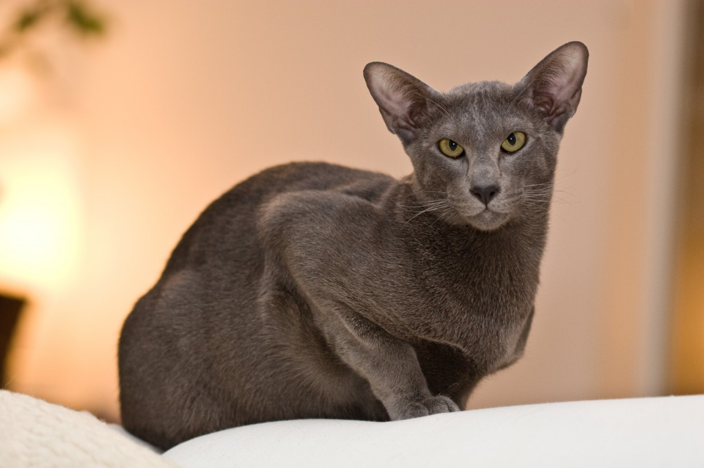
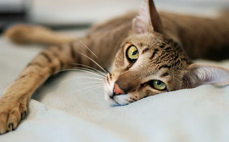

Giống mèo Mỹ Lông ngắn được du nhập vào Mỹ từ 400 năm trước và được nhiều người dân ở đây yêu quý và ưa chuộng. Chúng săn chuột, rắn tốt và thích nghi nhanh tại vùng đất này để phát triển giống nòi nhanh chóng. Cho tới những năm 1895 thì giống mèo này đã được có mặt tại triển lãm mèo tại Mỹ và được công nhận chính thức vài năm sau đó bởi CFA. Điều này đánh dấu một bước chuyển lịch sử của giống mèo này và cái tên mèo Mỹ lông ngắn chính thức được ra đời vào năm 1966.
Tính cách: Cũng khá giống với mèo Ba Tư hoặc Anh Lông Ngắn thì Mèo Mỹ lông ngắn khá điềm đạm, chúng hòa đồng và không quá cởi mở với người lạ. Không thích phá phách và nghịch ngợm vì vậy chúng rất được ưa chuộng tại Mỹ. Với các động vật khác, giống mèo này cũng không quá thân thiện, chúng nên được huấn luyện và làm quen với sự có mặt của các động vật khác. Đây là giống mèo thích hợp cho môi trường căn hộ nhỏ, chúng thích chủ nhân tôn trọng sự độc lập của mình và muốn hoạt động một cách độc lập. Các bạn cũng không cần quá quan tâm tới việc chăm sóc và vuốt ve chúng thường xuyên như các giống mèo khác.
Mèo Mỹ lông ngắn sở hữu bộ lông ngắn nên việc việc chăm sóc cho mèo không khó khăn, bạn chỉ cần loại bỏ lông rụng hàng tuần. Tùy vào thời điểm mà lượng lông rụng của chúng tăng lên. Độ dày của lớp lông cũng thay đổi theo mùa. Vì vậy, khi nuôi mèo Mỹ lông ngắn, bạn chỉ cần chăm sóc bộ lông của chúng theo các khoảng thời gian trong năm.